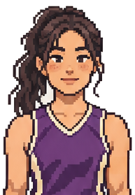
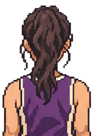

Mia, 19
Rolled her ankle at netball. Handy for PHTY1040 and PHTY2020.
You've got five chances to check your patient. Then make your best guess.
Case notes
Loading your patient…




You'll see who they are and why they've come in. That's all you get to start with.
Ask about their pain, test their reflexes, listen to their chest. Pick from the ideas or type your own. Good checks get you a clue and they turn around. Unhelpful ones get you nothing, and that chance is gone.
When you think you know, open the arrow next to Assess and make your call. Then see what was really going on and which checks mattered most.
If you're studying physiotherapy at the University of Newcastle, your practical vivas will ask you to take a history, pick the right tests, keep your patient safe and explain what you think is going on, all with an examiner watching.
Physio Hunch lets you rehearse that thinking in a couple of minutes. Each case rewards the questions and tests an examiner would want to see, and it calls you out if you do something unsafe, like getting a stroke patient up before checking their blood pressure.
You ask Mia: "What happened?"
"I went up for a rebound, landed on someone's foot and rolled my ankle inwards. Felt a pop on the outside."
That's a clue. Mia turns, and you've still got four chances left.
You try a Lachman test.
No response.
That's a knee test, and her problem is her ankle. The chance is gone, and nothing turns.
Rolled her ankle at netball. Handy for PHTY1040 and PHTY2020.
 Musculoskeletal
MusculoskeletalHurt his back lifting boxes, and now it's going down his leg.
Her left leg gives way when she stands. Good for PHTY2030 and PHTY3070.
 Cardiorespiratory
CardiorespiratoryOne day after bowel surgery and needing more oxygen. Good for PHTY3020.
 Red flag
Red flagSays his shoulder aches. The trick is spotting that it isn't his shoulder.
No. It's an independent study game and isn't connected to or endorsed by the University of Newcastle. Your course outline and Canvas site are always the final word on what your viva covers.
Musculoskeletal (handy for PHTY1040 and PHTY2020), neurological (PHTY2030 and PHTY3070), cardiorespiratory (PHTY3020), and red flag cases that matter in every viva.
Yes. Tap one of the ideas above the text box if you're stuck. Every case ends with a plain-English explanation.
No. It's free, there's nothing to sign up for, and it works on your phone or laptop.